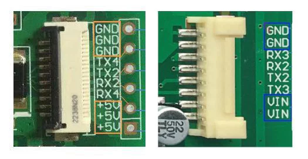
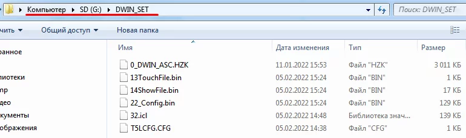
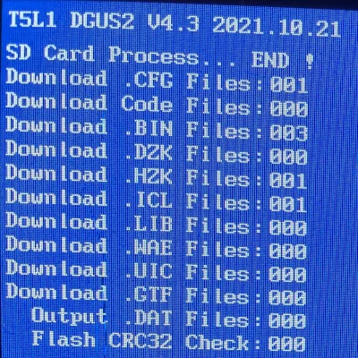
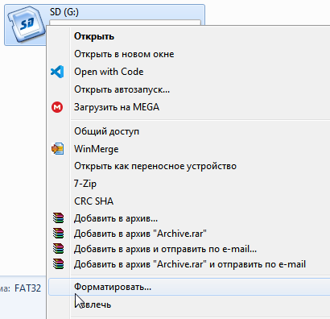

Начало разработки #1: загрузка прошивки
Впервые в руках и первый осмотр
Получив HMI модуль от DWIN в руки, первое что нужно сделать, как и с любыми другими модулями, это внешний осмотр на отсутствие дефектов и брака.
Вероятность крайне низкая, но вдруг что-то твердое прилетело в район микросхем/дорожек или стекла.
Далее следует уделить внимание малозаметной перемычке. Она есть на большинстве модулей и отвечает за режим работы serial порта.
Если перемычка замкнута/спаяна - режим TTL/UART.
Если перемычка разъединена - режим RS232.
С завода модуль в режиме RS232, поэтому если вы используете микроконтроллер, например ардуино. То перемычку нужно замкнуть, можно просто спаять или припаять smd резистор номиналом 0 Ом.
Очень важный пункт. Как говорится "сон и питание - основа летания".
Подготовьте надёжный источник постоянного тока на напряжение которое рассчитан ваш HMI модуль.
Если модуль на 5В и вы собираетесь питать его от USB компьютера, то удостоверьтесь что USB порт компьютера способен выдать нужный ток.
В противном случае ничего страшного не случится, просто дисплей не запустится или будет лагать/боить.
А вот если сбой питания будет при прошивке os.bin, то может "всё сломаться". К счастью в рамках данной инструкции OS загружать не будем.
В общем если что-то не заработает по инструкции: первое - смотрите питание.
На своём примере могу сказать что мне удалось запустить 7" дисплей от ноутбучного USB только напрямую, через USB хаб уже лагал.
С коннекторами всё просто: смотрите подписи на шелкографии.
SD флеш карта
Подготовьте SD флеш карту в соответствии с типоразмером SD гнезда у модуля.
Большинство модулей имеют разъём для micro-SD, однако бывают модули и с стандартным SD.
Если вы заказали карту у DWIN, то они прислыют карты от KIOXIA - это ребренд PHILIPS.
Рекомендую к использованию нормальные карты от известных производителей: SanDisk, Kingston, Transcend, KIOXIA/PHILIPS. Со всякими Smartbuy, Mirex и т.п. могут возникнуть проблемы.
Поддерживаются SD карты размером от 1 ГБ до 16 ГБ.
Правильное форматирование SD карты
Чтобы DWIN модуль увидел карту она должна быть на светлой стороне и в правильнSD флеш карта
Подготовьте SD флеш карту в соответствии с типоразмером SD гнезда у модуля.
Большинство модулей имеют разъём для micro-SD, однако бывают модули и с стандартным SD.
Если вы заказали карту у DWIN, то они прислыют карты от KIOXIA - это ребренд PHILIPS.
Рекомендую к использованию нормальные карты от известных производителей: SanDisk, Kingston, Transcend, KIOXIA/PHILIPS. Со всякими Smartbuy, Mirex и т.п. могут возникнуть проблемы.
Поддерживаются SD карты размером от 1 ГБ до 16 ГБ.
Правильное форматирование SD карты
Чтобы DWIN модуль увидел карту она должна быть на светлой стороне и в правильном формате.
Правильный формат это:
Файловая система: FAT32
Размер кластера: 4096 байт
Попробуйте форматировать карту обычным методом.
Если не поможет, то вернись к этому пункту и попробуйте "запасной метод"ом формате.
Правильный формат это:
Файловая система: FAT32
Размер кластера: 4096 байт
Попробуйте форматировать карту обычным методом.
Если не поможет, то вернись к этому пункту и попробуйте "запасной метод"
Загрузка бинарных файлов
HMI модуль, по умолчанию*, читает данные из директории/папки DWIN_SET.
*имя папки можно изменить через конфигурационный(.cfg) файл.
Скачайте демо проект
В архиве демо проекта есть папка /SD, оттуда скопируйте папку DWIN_SET на флеш карту.
Проверьте наличие бинарных файлов на флеш карте по пути: /DWIN_SET/
Вставьте флеш карту в HMI модуль.
Подайте питание.
Вы увидите синий экран - дождитесь завершения загрузки файлов.

Слева загрузка успешно завершена. Справа если что-то пошло не так.
Так как файлы на флешке в соотвествующей папке - значит проблема в флешке.
Нужно вернуться к пункту с форматированием и форматировать флешку по "запасному варианту". Затем снова загрузить файлы и повторить прошивку.
После успешной загрузки
вытащите флеш карту и пере-подайте питание.
Вы увидите демо проект.
Он сделан для экранов размером 320x240px. Поэтому при другом размере экрана вокруг будут чёрные рамки.
В демо проекте для смены слайда нужно нажимать на боковые части картинок . А на картинке с жёлтыми цветами есть цифра. Если на неё нажать, то увеличится счётчик переменной на 1.
Кажется что-то пошло не так...
Если после загрузки отсутствует результат - проверьте в даташите на каком чипе ваш дисплей. Если он не на чипе T5L*, а на чипе T5(T5U*), то дизайн-прошивки вам нужно создавать в ПО DWIN DGUS_V7388 есть на странице скачать/загрузки
Не рекомендуем планировать производство на дисплеях с чипом серии T5. Только T5L*.
Поздравляю с первой прошивкой и проверкой работоспособности дисплея!
В следующей статье будет знакомство со внутренней архитектурой HMI модуля DGUSII.
С завода модуль в режиме RS232, поэтому если вы используете микроконтроллер, например ардуино. То перемычку нужно замкнуть, можно просто спаять или припаять smd резистор номиналом 0 Ом.